Ana ekran widget'ları
Sınava kalan gün ve bugünün dersleri, uygulamayı açmadan ana ekranında.
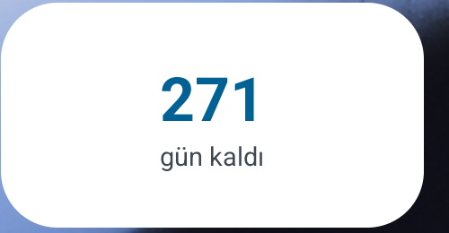
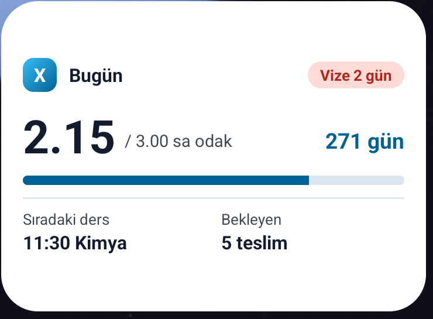
 ÖğrenciX
İndir
ÖğrenciX
İndir
ÖğrenciX; odak seanslarını, derslerini, ödevlerini ve deneme netlerini tek yerde toplar. Kalan zamanı ve o zamanı nasıl kullandığını görürsün.
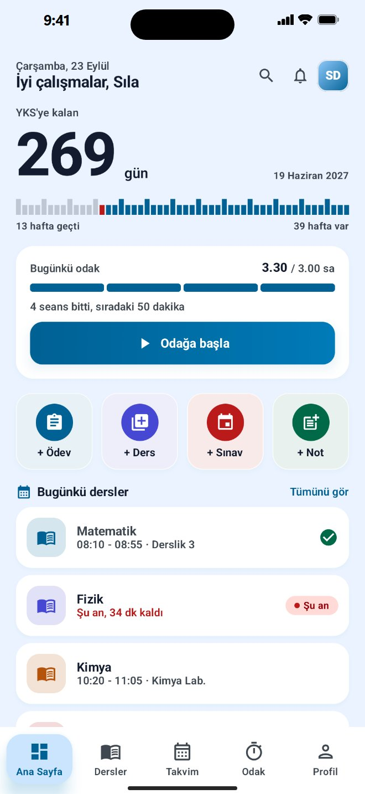
25/5, 50/10, 90/15 ya da kendi süren. Sayaç halka değil; her çentiği bir dakika olan altmışlık bir kadran. Seans bitince hangi derse ne kadar çalıştığın kaydedilir.
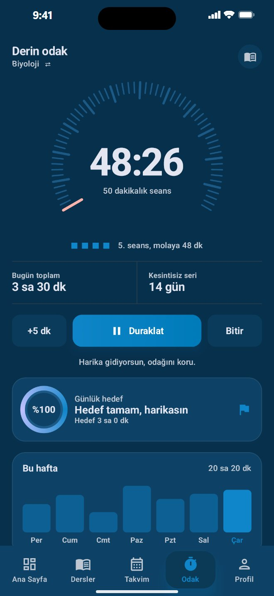
Her derste konu konu hakimiyet puanı ver. Eşiğin altına düşen konu, sıradaki hamle olarak önüne gelir: “Diziler'den başla.”
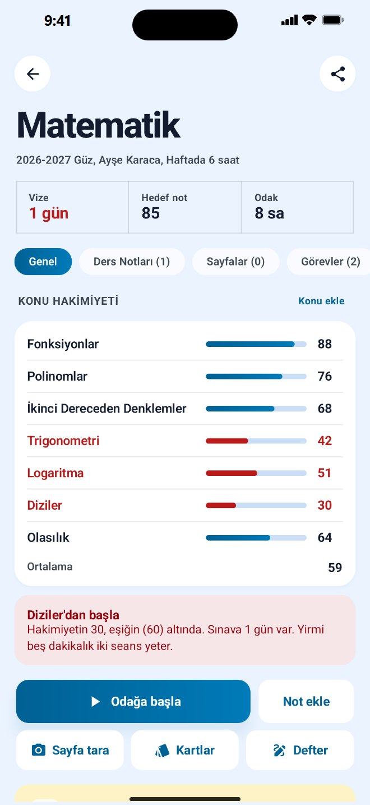
LGS, TYT ve AYT (Sayısal, Eşit Ağırlık, Sözel) denemelerini doğru ve yanlış olarak gir. Net otomatik hesaplanır; ders ders dağılım ve gelişimin grafikte görünür.
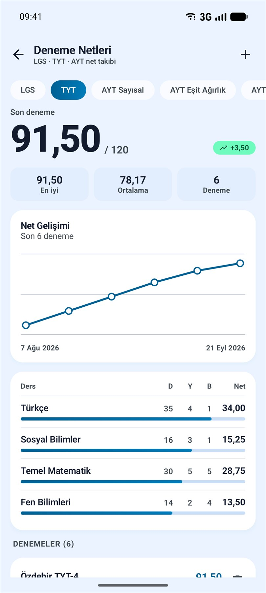
Haftalık program ve ay takvimi, ders başlamadan hatırlatma. Teslim tarihine göre gruplanan ödevler, yaklaşan yazılılar için geri sayım.
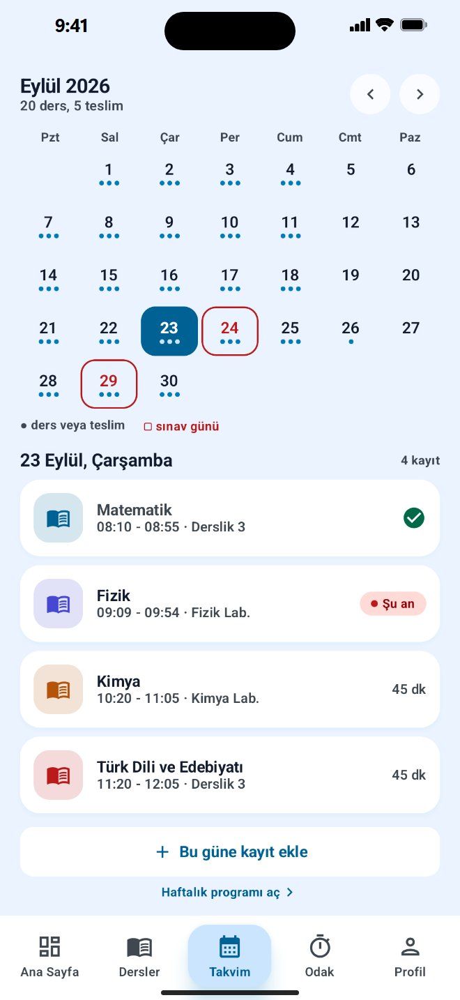
PDF föylerinin üzerine kalemle çöz, işaretle, fosforla. Defterlerini derse göre düzenle. Sayfayı tara, yazıyı metne çevir ve içinde ara.
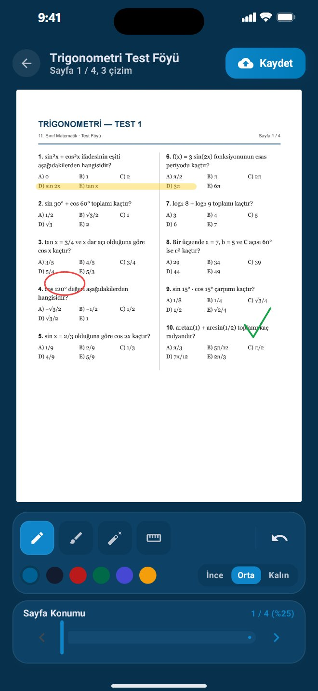
Odak dakikaların, biten ödevlerin ve denemelerin XP kazandırır. Bu hafta, tüm zamanlar ve arkadaşlar sıralamasında yerini gör; arkadaşını koduyla ekle. Biri seni geçerse haberin olur.
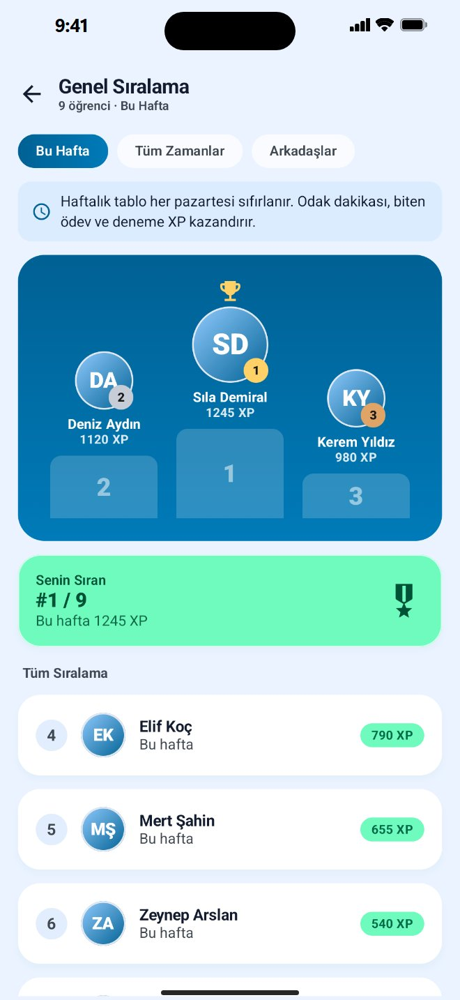
Ana sayfa, dersler, takvim, odak, denemeler ve çalışma alanı geniş ekrana göre yerleşir. Aynı hesapla iPhone'un ve iPad'in eşitlenir.
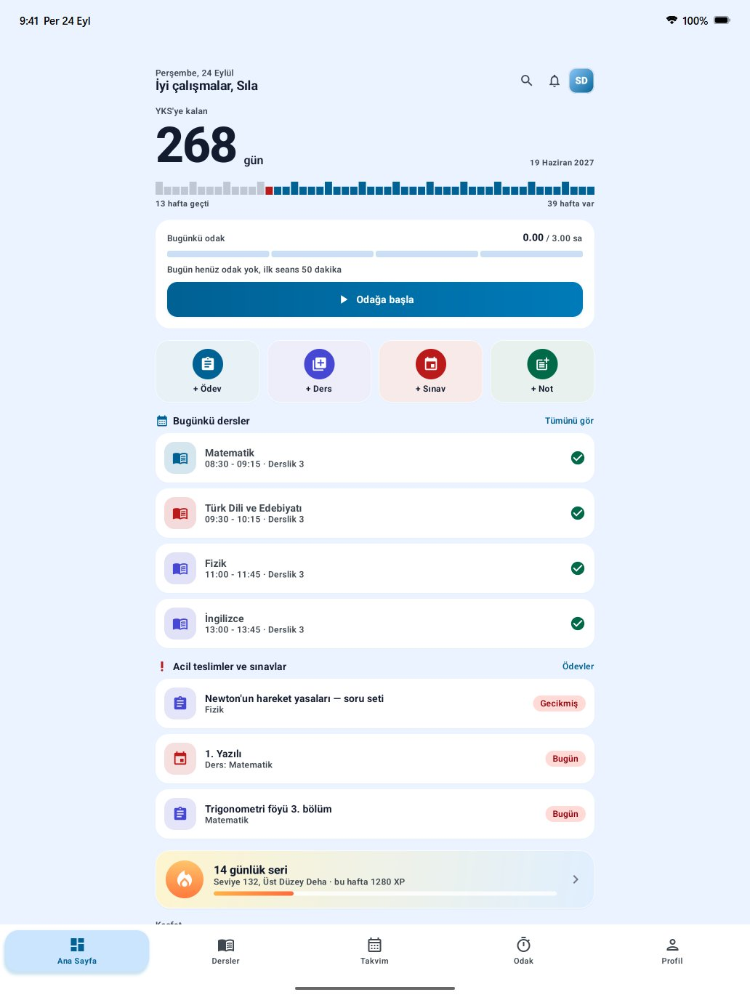
Hesap açmadan kullan; her şey telefonunda kalır. İstersen giriş yap, verilerin yedeklensin ve cihazların arasında eşitlensin. Gece çalışanlar için tam koyu tema.
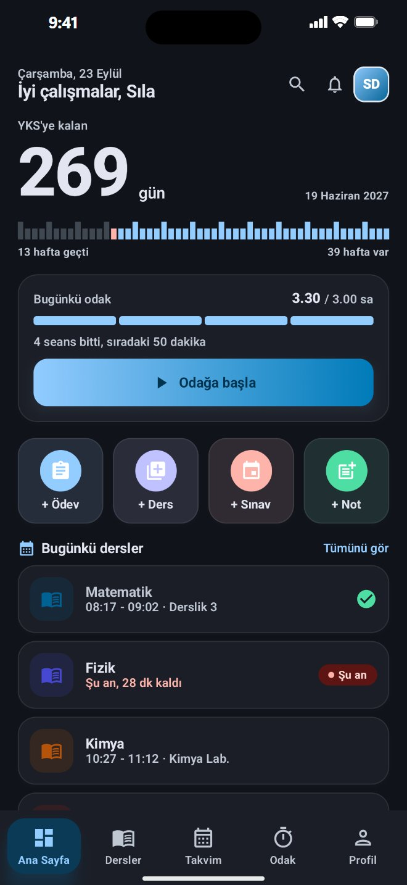
Dersler, profil, sınavlar, keşfet, bildirimler ve daha fazlası.
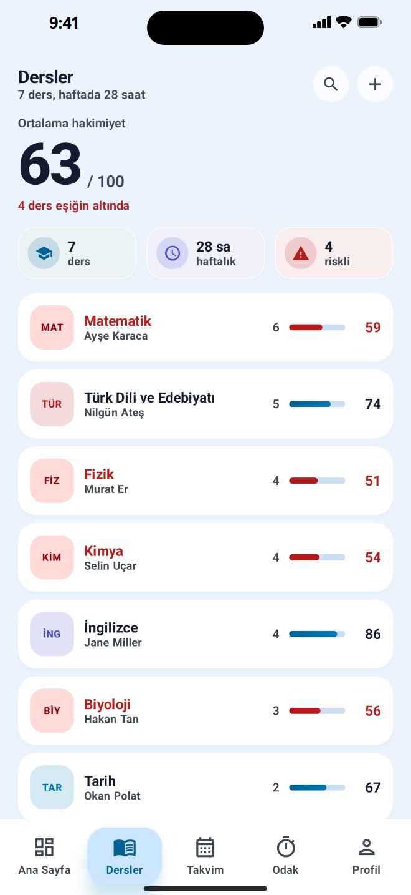
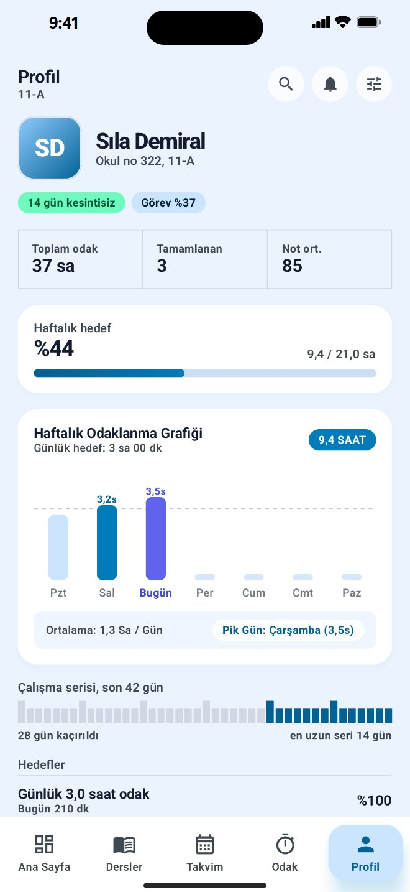
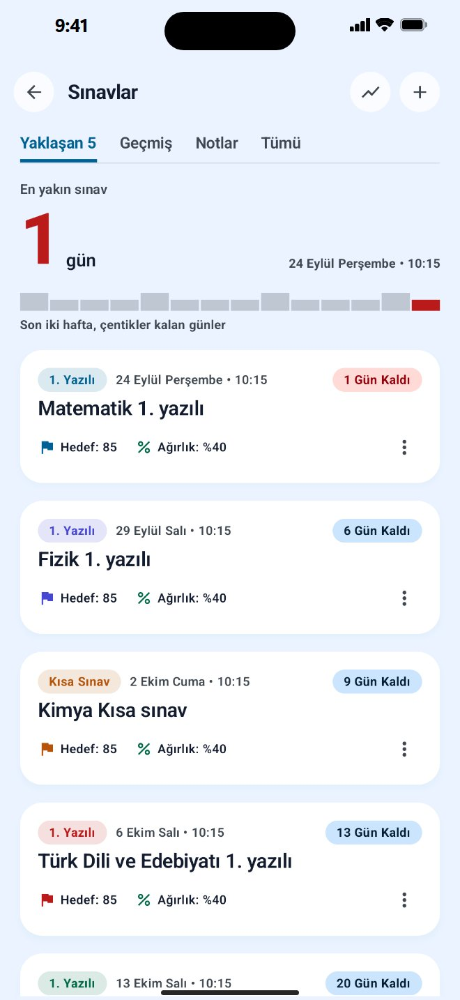
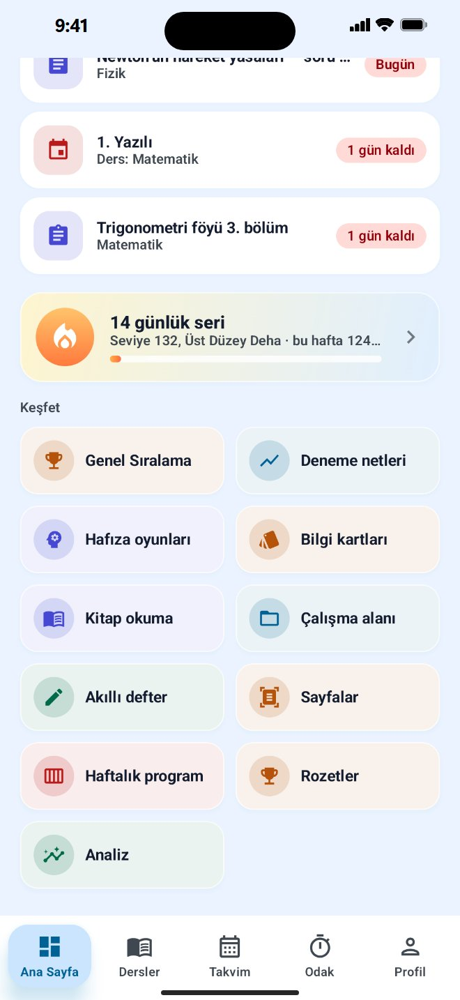
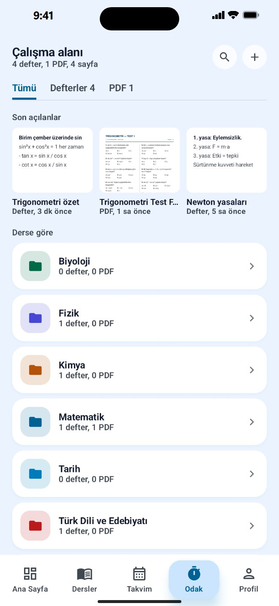
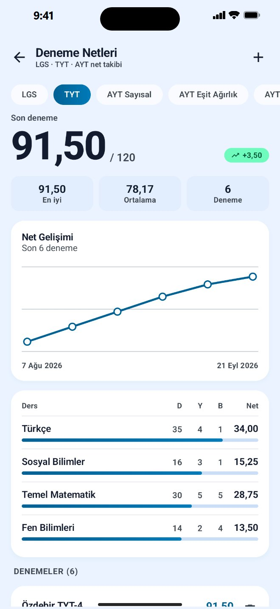
Sınava kalan gün ve bugünün dersleri, uygulamayı açmadan ana ekranında.


Aralıklı tekrarla ezberin kalıcı olsun.
Seans arası kısa zihin molaları.
Okuduğun kitaplar ve sayfa ilerlemen.
Çalışma özetini PDF olarak paylaş.
Ders, ödev, sınav ve kart tekrarı zamanında.
Haftalık odak grafiği ve not ortalaması.
Seri, saat ve görev hedefleriyle seviye atla.
ÖğrenciX ücretsiz. İndir, sınav tarihini gir, ilk odak seansını başlat.
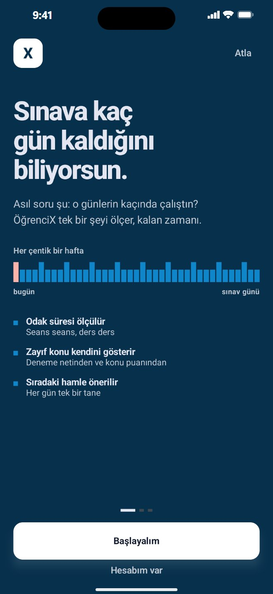